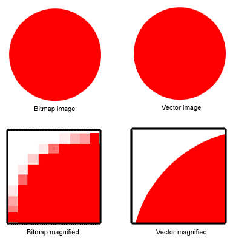

Bitmap

Bitmap en vector
Elke bitmapafbeelding bestaat uit pixels, die een specifieke kleur hebben. Als je inzoomt op de bitmapafbeelding zie je deze
kleuren als blokjes. Dit kost veel opslagruimte en bij het inzoomen wordt de kwaliteit verslechterd.
Daarnaast zijn er ook vectorafbeeldingen. Deze hebben in plaats van pixels punten, die door een vloeiende
lijn verbonden worden en zo vormen maken. Wanneer je inzoomt op zo'n afbeelding, zie je geen blokjes, maar blijft deze scherp.
Dit is handig als je een foto ver moet inzoomen; de kwaliteot verandert niet.
Normale foto's kunnen niet als vectorafbeelding worden opgeslagen, omdat deze uit pixels bestaan en niet de vloeiende lijn.
Opslag van geluid
Via een microfoon wordt geluid in een computer opgeslagen. Dit geluid moet in digitale waardes worden omgezet: sampelen. Hierbij
wordt elke seconde gemeten hoe sterk het geluid is. Hoe meer metingen per seconde, hoe meer het geluid klinkt als het
geluid dat je hebt opgenomen. Dit wordt ook wel de 'sampling rate' genoemd.
De trillingen van de lucht die via de microfoon naar binnen komen, worden door de computer omgezet naar binaire getallen. Wanneer je een video afspeelt,
worden de binaire getallen juist weer omgezet naar trillingen.